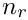
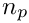
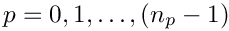
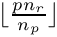

In this document we provide an overview of oomph-lib's distributed linear algebra framework, discussing its design and key functionality. The aim of this framework is to facilitate the parallel (distributed) execution of linear algebra type operations with little (or no) user intervention. This requires all linear algebra data and computations to be distributed over all available processes.
We begin by defining the OomphCommunicator, a class that is fundamental
to distributed computing in oomph-lib. Next we discuss the class LinearAlgebraDistribution which specifies the distribution of the data and computations over the available processes. In Sections DoubleVector, CRDoubleMatrix and DistributedLinearAlgebraObject we discuss oomph-lib's distributed linear algebra objects including the key containers (matrices and vectors) and operators (solvers and preconditioners). Finally, we demonstrate how the distributed linear algebra framework is typically used in practice.
The primary aim of this document is to provide an overview of the design and functionality of distributed linear algebra capabilities in oomph-lib, and hence we do not discuss every method of every class; we refer the reader to the class documentation for a complete specification.
Oomph-lib employs MPI for distributed memory parallelisation. Fundamental to MPI is the communicator
( MPI_Comm ) which determines which processes are involved in a parallel computation. Although oomph-lib is implemented in C++, the C MPI bindings are utilised. Oomph-lib provides the class OomphCommunicator as an object-oriented wrapper for a MPI_Comm.
Calling MPI_Helpers::init(argc,argv) is equivalent to calling MPI_Init(argc,argv). It initialises MPI ( i.e. calls MPI_Init(argc,argv) ) and creates oomph-lib's global communicator:
The newly created communicator is available via a MPI_Helpers class static method:
and is equivalent to the MPI_COMM_WORLD communicator in that it represents all the processes that oomph-lib knows about. By default, this communicator contains exactly the same set of processes as MPI_COMM_WORLD.
The OomphCommunicator provides a number of access functions to communicator data including the rank of the process and the number of the processes:
Distributed memory parallelisation requires data and computations to be distributed over the available processes in some way. In this document we are solely interested in distributed linear algebra. We choose to distribute the linear algebra objects row-wise, and constrain the distribution such that each process is associated with a single contiguous set of rows. The class LinearAlgebraDistribution allows the specification of such a distribution.
The distribution is defined by two integers defining the first global row and the number of local rows associated with a process. This data is sufficient to allow a mapping between a global row number and a local row number on a particular process.
To construct a LinearAlgebraDistribution in which 100 rows are uniformly distributed across the set of processes specified by comm_pt we write:
In this example, if run on four processes, the first 25 rows are associated with process 0, the next 25 rows are on process 1 and so on. In general, in a uniform distribution of  global rows over  processes the first row on process  is . It is also possible the specify alternative user defined distributions; see the class documentation for details.
An optional third ( bool ) argument (default: true) in the constructor indicates that we require a distributed linear algebra distribution. However, on some occasions we may want to replicate all rows of a linear algebra object on all processes. This is achieved by simply making the third argument false (non-distributed):
This example illustrates two other features of LinearAlgebraDistribution. Firstly, the default constructor creates an empty distribution, and secondly for every (non-default) constructor there is an equivalent build(...) method to "re-construct" the object.
The state of the object is accessible through a range of methods.
The built() method indicates if the object specifies a distribution, or is empty.
The simplest distributed linear algebra object is DoubleVector, a distributed vector of doubles developed specifically for linear algebra (It differs from a Vector<double> which simply provides a container for doubles ). For example, the following command constructs a DoubleVector with a uniform distribution (specified by the distributed LinearAlgebraDistribution defined in the previous section) and unit elements:
To access the vector elements the operator[] is implemented. For example to increment every element by one:
It is the oomph-lib convention that the data in DoubleVector (and all other distributed linear algebra object) is accessed using local indices. The following loop documents the local row number, the global row number, and the value of the elements on each process:
To change the distribution of a DoubleVector while retaining the data, we provide the redistribute(...) method. For example to change my_vector from uniformly distributed to locally replicated:
Just like the LinearAlgebraDistribution, we provide build() methods that mirror the behaviour of all non-default constructors. For example to revert my_vector to a uniform distribution with unit elements:
It is important to differentiate between build(...) and redistribute(...); calling build(...) deletes the existing data, effectively re-constructing the object, whereas redistribute(...) retains the vector's data.
Like the LinearAlgebraDistribution, a DoubleVector need not contain any data. To generate an object in this state, we could instantiate an object using the default constructor or call the clear() method:
Again the built() method returns the state of the object and indicates if it contains any data.
CRDoubleMatrix is the only distributed matrix in oomph-lib. It employs sparse compressed row storage to store double coefficients.
A CRDoubleMatrix has three fundamental states:
CRDoubleMatrix can have no distribution or coefficients in which case my_matrix->distribution_built() and my_matrix->built() are both false.my_matrix->distribution_built() is true but my_matrix->built() is still false.my_matrix->distribution_built() and my_matrix->built() are both true. For example, to construct an empty matrix we call:
To specify the distribution as defined by the LinearAlgebraDistribution distributed_distribution we write:
The distribution has now been specified but the coefficients have not. Like the DoubleVector, rows are indexed locally and hence the coefficients rows must be indexed locally. For example, to populate my_matrix as a square identity matrix, we write:
We note that the column indices are global because only the rows are distributed. The assembly of a CRDoubleMatrix is now complete.
We constructed the matrix in two stages by first specifying the distribution and then specifying the coefficients. However it is possible to perform this operation in just one step, by using the appropriate constructor or build(...) method, for example:
In this section we introduce the class DistributedLinearAlgebraObject, a base class for all distributed linear algebra objects. This class encapsulates a LinearAlgebraDistribution, provides (protected) access to derived classes to update ( build_distribution(...) ) and clear ( clear() ) the stored distribution. Secondly, it provides methods to simplify access to commonly used LinearAlgebraDistribution data. For example, because a CRDoubleMatrix is a DistributedLinearAlgebraObject,
can be replaced with
DistributedLinearAlgebraObjects can be divided into two types: containers and operators. We have already reviewed the containers DoubleVector and CRDoubleMatrix. A wide range of operator classes have been implemented in oomph-lib to operate on these containers. In particular, all LinearSolvers, IterativeLinearSolvers and Preconditioners (discussed in the Linear Solvers Tutorial) are DistributedLinearAlgebraObjects. We finish this section by reviewing the key linear algebra operators:
SuperLUSolver is a LinearSolver wrapper to both the SuperLU direct solver and the SuperLU Dist distributed direct solver. By default, whenever possible this class will automatically perform distributed solves.TrilinosAztecOOSolver is an IterativeLinearSolver wrapper to the Trilinos AztecOO package implementation of distributed Krylov methods including CG, GMRES and BiCGStab.TrilinosMLPreconditioner is a wrapper to the distributed Trilinos ML AMG preconditioners.TrilinosIFPACKPreconditioner is a wrapper to the distributed Trilinos IFPACK preconditioners.HyprePreconditioner is a wrapper to the distributed Hypre Scalable Linear Solvers package, of particular interest is the classical AMG implementation BoomerAMG.MatrixVectorProduct is a wrapper to the Trilinos Epetra distributed matrix-vector product implementation.Having discussed oomph-lib's linear algebra infrastructure, we finally remark that oomph-lib is implemented such that linear algebra in oomph-lib is automatically distributed if executed under MPI on multiple processes. Specifically, a user should not need to specify either a LinearAlgebraDistribution or a OomphCommunicator, unless they wish to customise some aspect of the parallelisation.
All functionality is designed such that if a user does not specify a LinearAlgebraDistribution, then as much data and computation as possible will be uniformly distributed over all available processes.
As an example, we consider the Problem method get_jacobian(...). If the user does not specify a return distribution for the Jacobian and residuals, then oomph-lib will uniformly distribute both containers.
On the other hand, a user can specify a return distribution by setting the distribution of the matrix and vector prior to calling get_jacobian(...).
We finally remark that because all linear algebra operations are automatically distributed, to parallelise oomph-lib's Newton solve phase, the user need only run their executable under MPI on multiple processes.
A pdf version of this document is available.